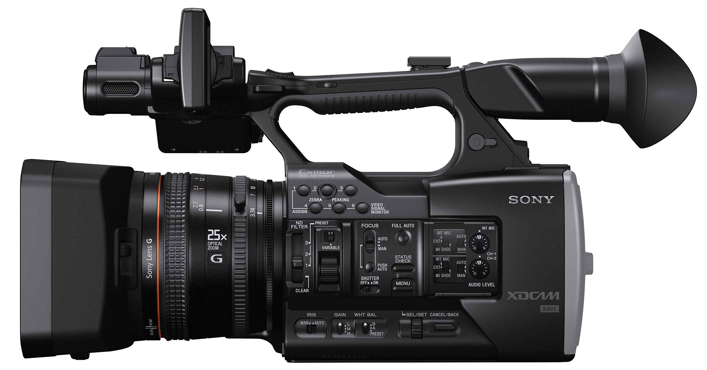
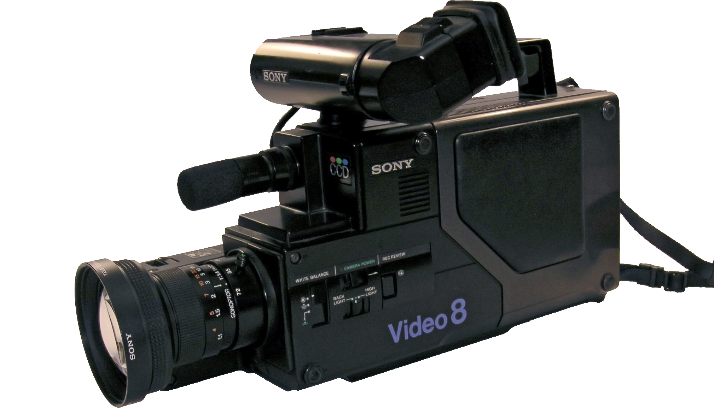
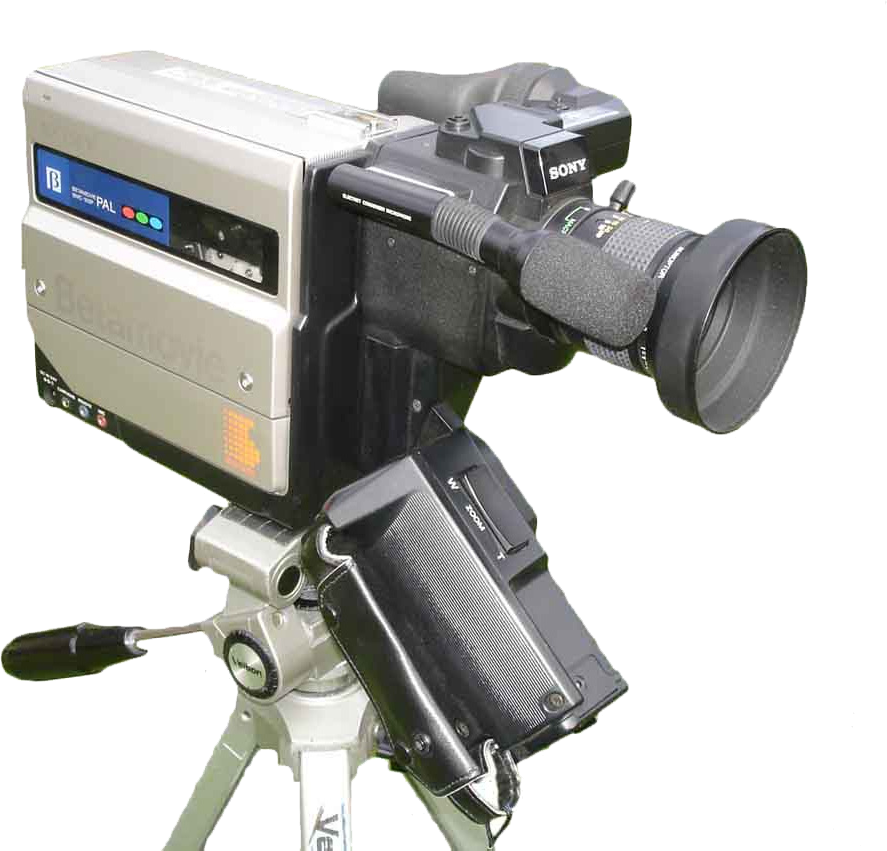

Videokameras im Wandel der Zeit
Zeit vergeht ziehmlich schnell, dennoch gibt es immer eine Sache die stetig vorranschreitet: Die Entwicklung neuer Technologien
2017
Es ist 2017 und mitlerweile sind 8K Kameras erhältlich. Dennoch machen heutzutage Smartphones den so erhältlichen HD Camcordern konkurenz.
2003
Der erste DV-Rekorder wird von Sony produziert und kostet unbeschreibliche 8000,- DM. Diese DV-Rekorder (Digital Video Rekorder) schreiben den Film auf eine sogenannte DV oder auch Mini-DV.
1984
Der erste Camcorder mit Video 8-Kassetten kommt auf den Markt. Abermals ist Sony der Entwickler.
1976
JVC präsentiert das Format Video Home System (VHS) während hingegen Sony das Format Betamax vorstellt. Beide Hersteller folgen mit den entsprechenden Kameramodellen. Jedoch entscheidet die VHS das Rennen für sich.
